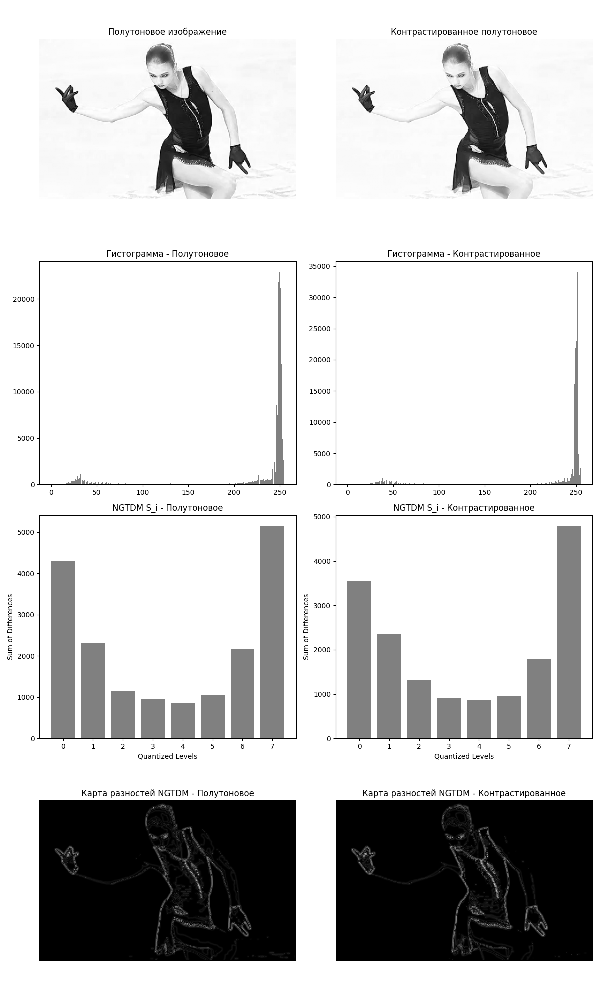
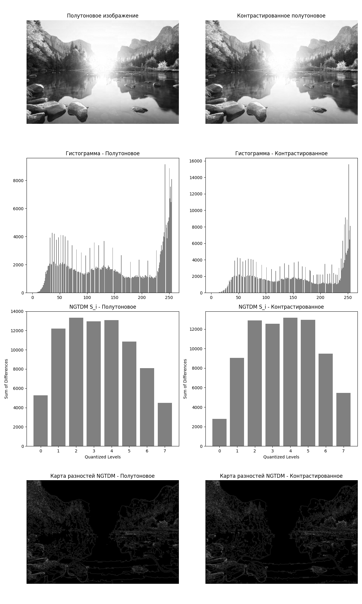
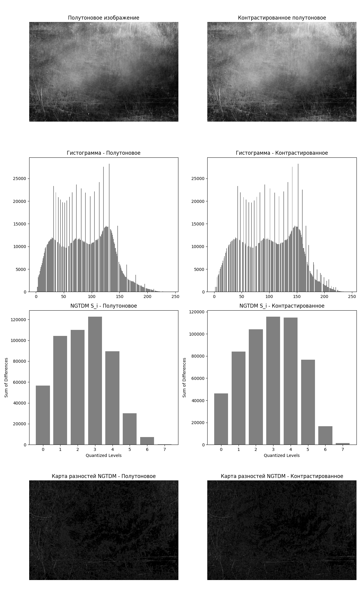

До преобразования: Coarseness=0.0002, Contrast=8.3215, Busyness=0.0001
После преобразования: Coarseness=0.0002, Contrast=7.1574, Busyness=0.0001

До преобразования: Coarseness=0.0001, Contrast=11.1095, Busyness=0.0000
После преобразования: Coarseness=0.0001, Contrast=9.6524, Busyness=0.0000


До преобразования: Coarseness=0.0000, Contrast=4.2755, Busyness=0.0000
После преобразования: Coarseness=0.0000, Contrast=5.0123, Busyness=0.0000